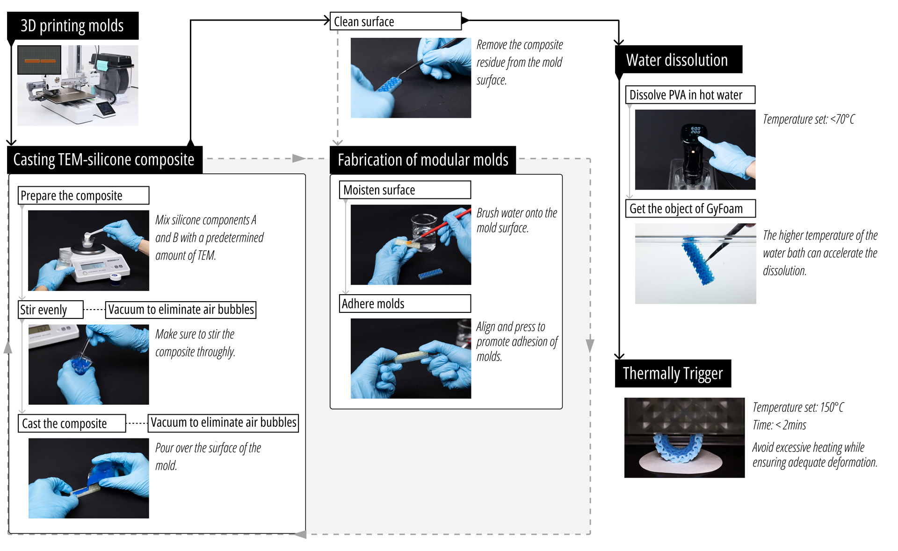
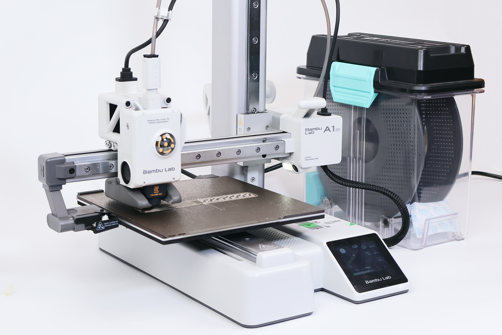
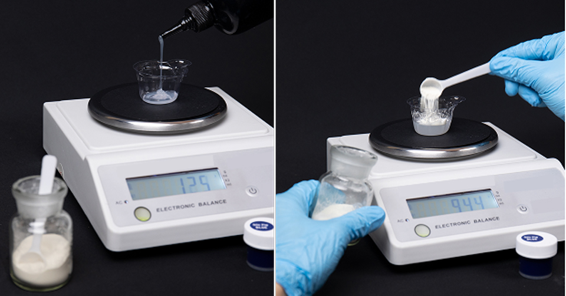
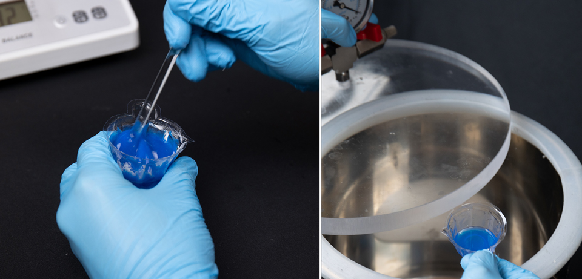
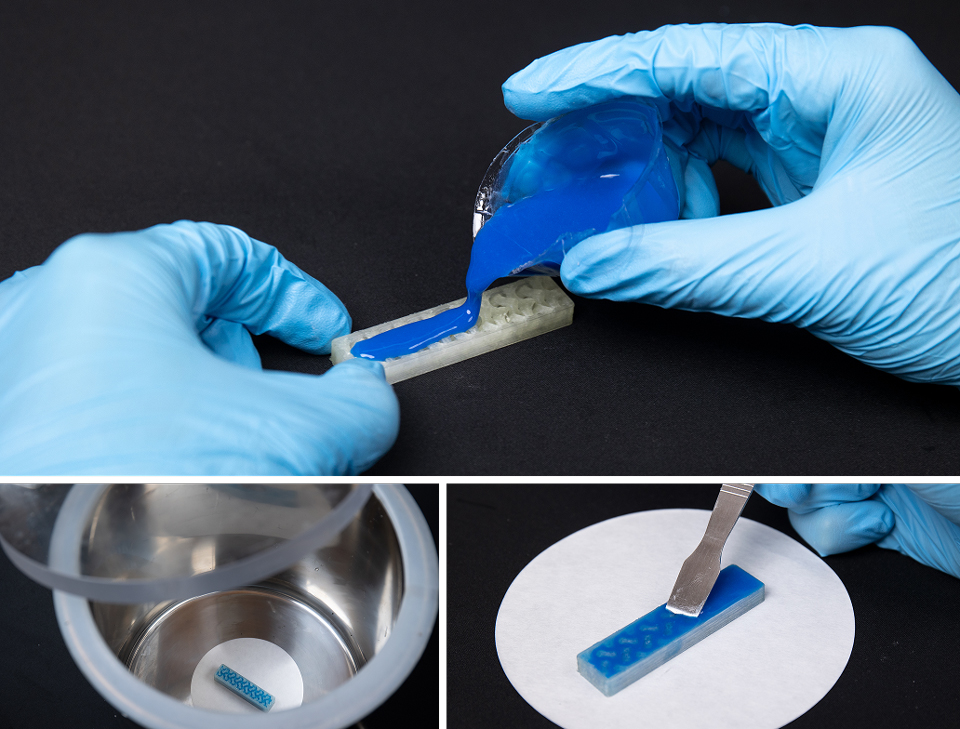
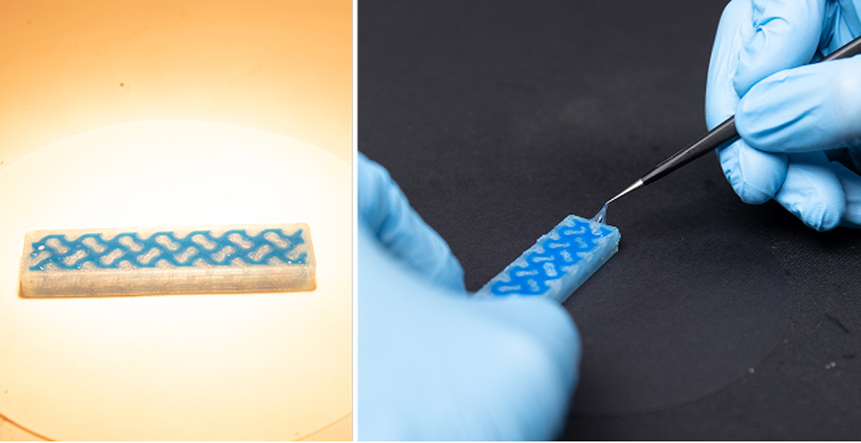
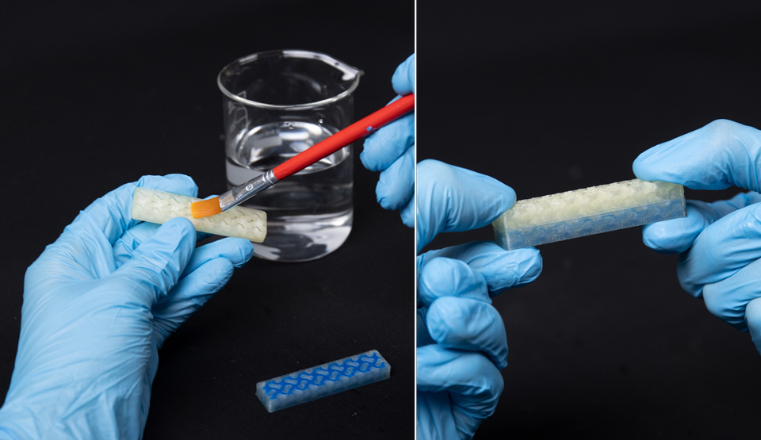
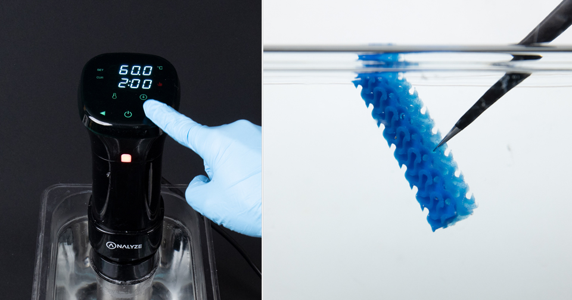
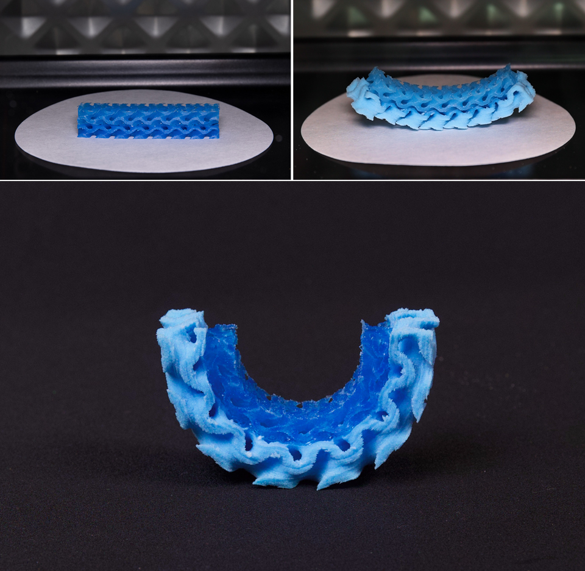

Fabrication Workflow
GyFoam allows general users to use common FDM 3D printers, standard filaments, commercially available Thermal-Expandable Microspheres and silicone to easily fabricate large-scale, lightweight, lattice-structured objects with customizable stiffness.
The entire process can be divided into Four main stages: Molds Preparation, Material Preparation and Casting, Assembly of Modular Mold, Post-Processing
We propose a modular mold fabrication method that may involve iterative processes across these stages. Thus, we provide simple decision points where users can choose different workflows based on their needs, and the page will automatically navigate to the corresponding stage.

Mold Materials
Foam Materials
Tools & Equipment
Import the mold model file generated by DesignTool into 3D printing software (Bamboo Studio). Users can segment the model according to their needs. Finally, proceed with slicing. We use the basic Bamboo A1 mini 3D printer and commercially available PVA filament for printing.
To avoid print failures, here are some recommended print settings:

Similar to traditional silicone preparation, we mix equal amounts of silicone components A and B with a specified amount of TEM.
There are a few points that need to be clarified:

Thoroughly stir with a glass rod to ensure complete mixing of TEM and silicone. Then, place the mixture in a vacuum chamber to remove residual air.
Complete the composite preparation process quickly to maintain its flowability. Extended mixing time will cause premature curing and increased viscosity, making it difficult to pour into molds.

We cast the composite onto the mold, allowing it to flow and fill the mold cavity. Next, the mold is placed in a vacuum chamber to remove any remaining air and ensure the mold is completely filled with the composite.
Here are some suggestions:

After complete filling, the mold needs to be placed on a horizontal surface to wait for the composite to solidify. Slightly increasing the temperature (below 70°C) is recommended to accelerate the curing process. After curing, we can use tools to remove the remaining composite from the mold surface to facilitate subsequent operations.

Decision Point: Have All Molds Been Successfully Filled?
Yes - All molds are filled
If all molds are successfully filled and cured, proceed directly to Stage 4 for post-processing.
No - Molds Require Assembly
If molds require assembly, proceed to Stage 3 for modular assembly first, then return to Stage 2.
Note: After completing Stage 3, you need to return to Stage 2 to repeat the filling process until all molds are filled.
We moisten the PVA mold surfaces, causing the PVA to transition into a sticky gel state. The two molds are then carefully aligned and pressed together. Users should maintain pressure until the PVA changes from gel back to a solid state, completing the bonding process. We also recommend applying pressure by placing a heavy object on the mold. It is crucial to keep the mold or composite surfaces clean and smooth to ensure effective adhesion of the PVA.

Return to Stage 2 After Assembly
After completing the modular assembly, return to Stage 2 to continue with material preparation and casting, ensuring all molds are fully filled.
After completing the casting process, we recommend using a water bath maintained at 60°C, with either continuous agitation or ultrasonic vibration (e.g., an ultrasonic cleaner), to effectively accelerate the dissolution of PVA. Additionally, it is advisable to periodically replace the liquid in the container to prevent the concentration of dissolved PVA from becoming too high, which may slow down the dissolution process.

Once the mold has fully dissolved, we retrieve the stable TEM-silicone composite, followed by thorough cleaning and drying. The foaming process is then initiated using heating tools such as ovens, thermostatic drying chambers, or heat guns.
Several recommendations are as follows:
